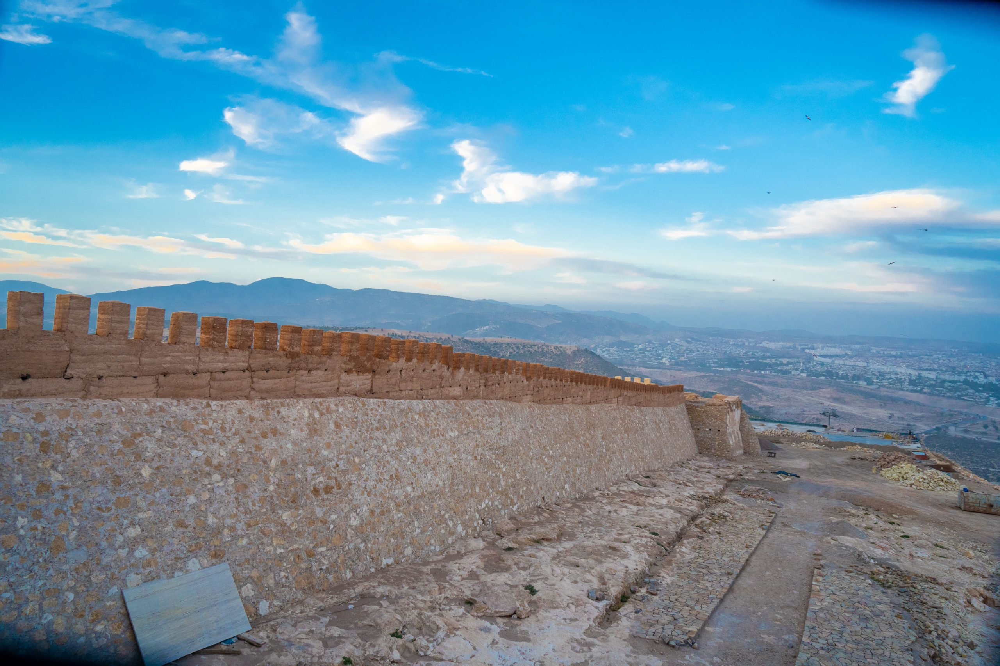
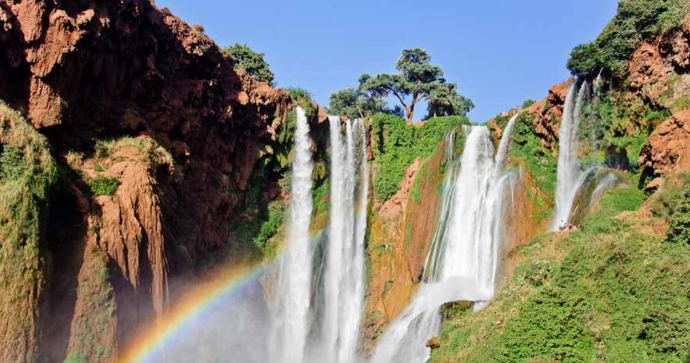
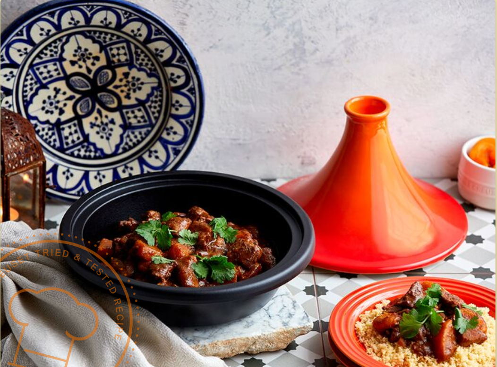
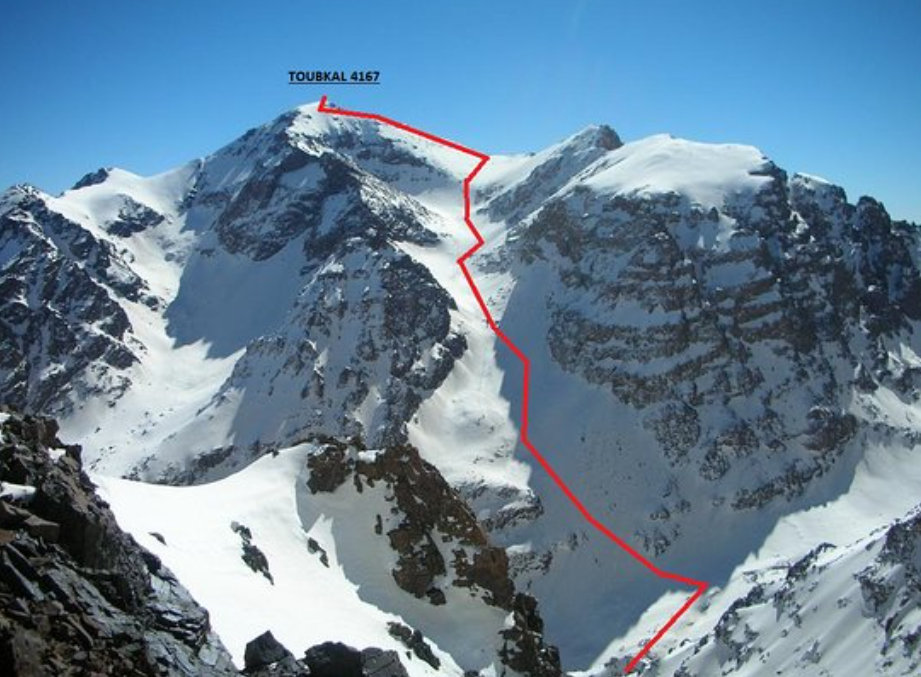

Découvrez l'Atlas : Un Voyage au Cœur du Maroc
Les montagnes de l’Atlas au Maroc offrent une expérience inoubliable : sommets majestueux, vallées verdoyantes et villages berbères. Randonnez dans des paysages enchanteurs, découvrez des traditions riches et partagez l’hospitalité chaleureuse des habitants. Aventurez-vous vers les cascades d’Ouzoud ou les gorges spectaculaires du Haut Atlas pour une immersion entre nature préservée et culture authentique. Que ce soit pour le trekking, la détente ou l’exploration, l’Atlas promet des moments uniques au cœur d’un décor à couper le souffle.

Début des montagnes d'Atlas

Cascades d’Ouzoud

Gastronomie locale (Tagine)

Le Mont de Toubkal (4167m)